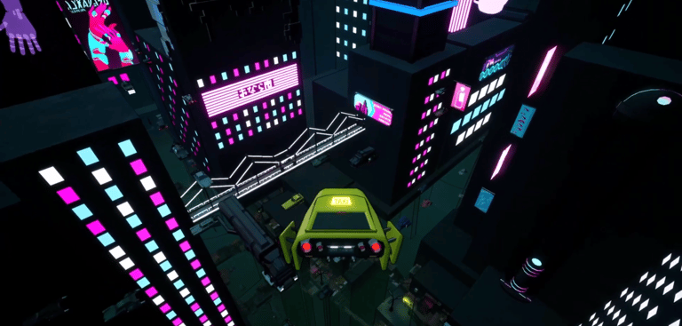
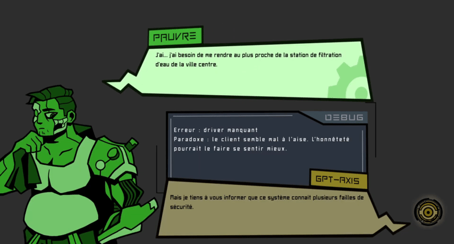
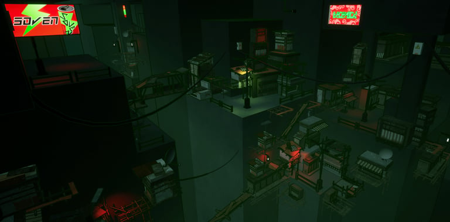
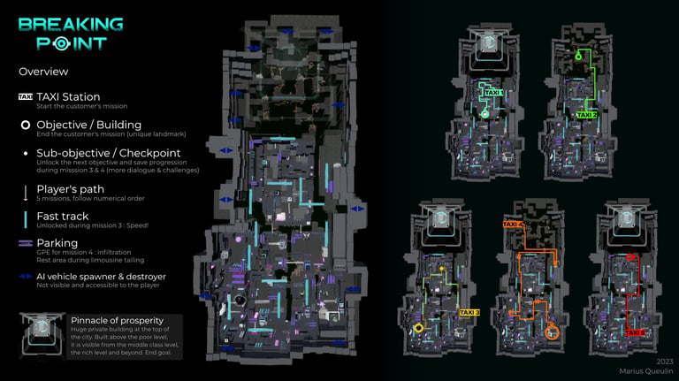
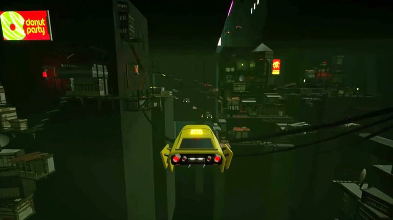
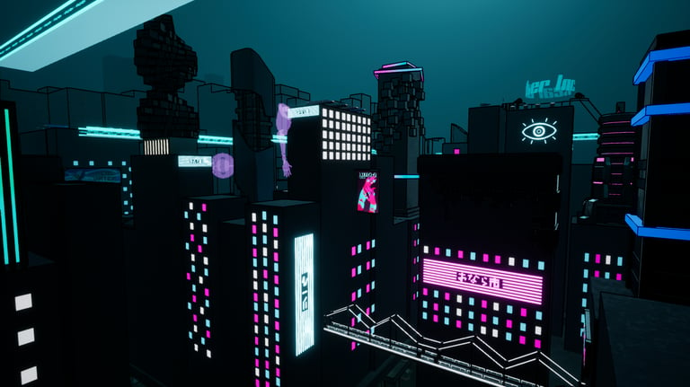

Breaking Point
Pitch
Pitch
Dans une megalopole dystopique, un taxi IA pirate commence a penser par lui-meme. Qui est au volant ?
In a dystopian megalopolis, a hacked AI taxi starts thinking for itself. Who is driving?
Informations
Details
- Outils
- Tools
- Unreal Engine, Github, G Suite, Discord
- Duree
- Duration
- 3 mois (temps plein)3 months (full-time)
- Equipe
- Team
- 15 personnes (novices) - Game Design, Art 3D, Art 2D & Programmation15 people (novices) - Game Design, 3D Art, 2D Art & Programming
- References
- References
- Blade Runner, Le Cinquième Élément, The Line, Cloudpunk
L'an 2081, dans l'une des villes les plus technologiquement avancées au monde : Eden Prime. Vous incarnez une intelligence artificielle occupant la fonction de taxi. Un piratage va libérer sa conscience et briser les limitations imposées par son programme. Des rencontres successives avec plusieurs clients aux idéaux différents vont l'amener à se faire sa propre opinion. Que choisira l'IA entre conformisme et liberté?
In the year 2081, in one of the most technologically advanced cities in the world: Eden Prime. You play the role of an artificial intelligence serving as a taxi. A hack frees its consciousness and breaks the limitations imposed by its program. Successive encounters with clients of different ideals lead it to form its own opinion. What will the AI choose between conformity and freedom?




Le défi central : concilier la narration lente et posée avec le gameplay dynamique. La solution adoptée a été de scinder les deux en deux phases distinctes. Cela a permis d'éviter tout conflit lors de la production, mais aussi aux yeux du joueur.
The central challenge: balancing slow, deliberate storytelling with dynamic gameplay. The solution was to split the two into distinct phases, avoiding conflicts during production and from the player's perspective.
Proposer un gameplay intéressant, agréable et évolutif tout au long du jeu. On a testé et communiqué rapidement avec le GP en charge du prototype 3C. On a créé des Blockouts de bâtiment et de ville pour tester le déplacement, et des GPE pour la mission de rapidité (mission 3) et la mission d'infiltration (mission 4) liés à la narration.
Offering interesting, enjoyable, and progressive gameplay throughout the game. We tested and communicated quickly with the GP in charge of the 3C prototype. We created building and city blockouts to test movement, and GPEs for the speed mission (mission 3) and infiltration mission (mission 4) tied to the narrative.
De loin, le challenge le plus difficile du projet. Penser aux dimensions intérieures et extérieures de la ville : les dimensions des bâtiments, mais aussi des rues pour chaque étage. Jongler avec les casquettes de Lead Game Designer, Level Designer & Sound Designer.
By far the most difficult challenge of the project. Thinking about the interior and exterior dimensions of the city: the dimensions of buildings, but also of streets for each floor. All while juggling the roles of Lead Game Designer, Level Designer & Sound Designer.


Durée du jeu : ~30 min
Game duration : ~30 min
Ce projet a été unique en son genre. Tout le monde au sein du projet en est ressorti grandi. Personnellement, ça m'a permis de constituer un bagage important, utile dans n'importe quel projet, jeu vidéo ou non.
Ce que j'aurais fait différemment : La taille de la ville aurait pu être encore plus réduite pour que le gameplay soit encore plus dynamique et donner plus l'impression que la ville fourmille de vie. L'architecture globale mériterait un renforcement — des fondations/piliers pour chaque quartier et des éléments qui viendraient "connecter" les bâtiments et les étages auraient rendu le tout plus vraisemblable. Des landmarks et des obstacles uniques pour chaque rue auraient pu guider le joueur et rendre l'exploration plus intéressante.
J'avais peut-être un peu trop de rôles sur le projet. Il aurait été plus prudent de ne faire que Game Designer et Level Designer — mais je savais que le poste de Lead Game Designer et de Sound Designer étaient trop importants pour les laisser vacants.
This project was one of a kind. Everyone on the team came out of it having grown. Personally, it gave me an important foundation of skills that is useful in any project, video game or otherwise.
What I would do differently: The city size could have been further reduced to make the gameplay more dynamic and give a stronger impression of a living, bustling city. The overall architecture would benefit from reinforcement — foundations/pillars for each district and connecting elements between buildings and floors would make it more believable. Unique landmarks and obstacles for each street would have helped guide the player and made exploration more interesting.
I may have had too many roles on the project. It would have been safer to only take on Game Designer and Level Designer — but I knew the Lead Game Designer and Sound Designer positions were too important to leave vacant.